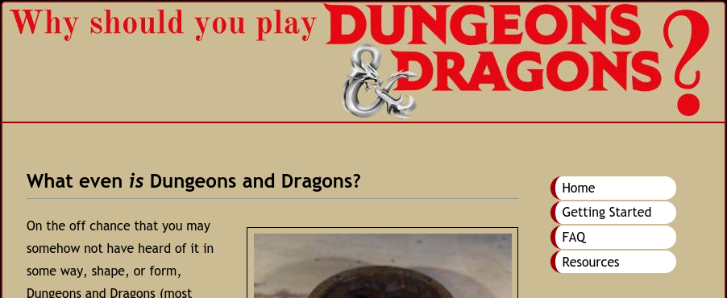

Here are examples of websites I have built throughout my experience in web development
 The first site I had truly built from the ground up. I collected images and wrote html, CSS, and Javascript to explore and promote a hobby of mine, stretching the skills I had learned over my first semester of learning how to add my threads to the tapestry of the internet.
Further into my education as a fledgeling web developer, I learned the merits and processes of responsive and mobile-first design. To showcase these skills I built a website showcasing a game I had recently discovered during that semester, sampling my newly-found knowledge of media queries and responsive design and showcasing my expanding and evolving skillset.
Here you will find a website for a non-existant pizza company that served as my final project in the second semester of my ITEC Minor course. I served as the primary developer and secondary designer, handling much of the base foundation of what became the site and helping the primary designer with aesthetic choices of the user interface.
For any website to be elevated from something beyond a static web page, it needs to have scripting and programs behind it. Here you can see an example of a calculator I programmed using Javascript and here you can see a unit converter I coded, also in Javascript, taking advantage of AJAX. Here and you will find a restaurant survey that I created while learning how to link a database to a website.
Another essential part of the web is data. Arguably, it's the primary function of the internet to store, share, process, and analyze data. To this end, I have accrued experience in database technologies. Here you will find a spreadsheet exercise about Jewelry prices and stock I created while learning database work and here you will find another exercise involving analyzing and compiling a wide range of data from several sheets into a single table.
As well as building websites and databases, I am fluent in the written word. Writing and soft skills are an important part of working in this industry, as one who aspires to grow must be able to think, create, and synthesize ideas and concepts. Here you can find an argumentative synthesis I constructed in the early days of my college career discussing the artistic value of video games and their potential as more than just a recreational passtime. Here you will see a research paper formed later that same semester deconstructing the causes, effects, and possible alleviations of climate change.
Alongside writing, understanding is another substantial part of professional growth. Soft skills such as speaking, analyzing, and understanding your environment and the emotions that permeate it are an essential part of professional growth. Here you can find a cultural analysis I created in my days in the ITEC minor cohort that defined a substatial part of my college education.
Throughout my days in that cohort, we put a lot of emphasis on soft skills and teambuilding, included in that was discovering and analyzing my MBTI. Whether or not one buys into the idea that their entire personality can be summed up in four letters and that these could guide where your life progresses, it was a good exercise in analyzing myself and how my mind works. If nothing else, being labeled an INTJ can give me a sense of pride in myself for being a rarity.